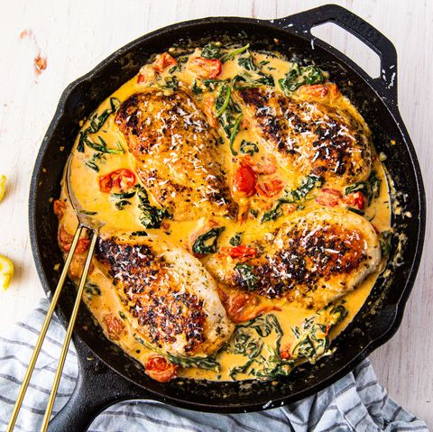

Tuscan Chicken

Where is Tuscan Anyway?
Be sure to have some crusty bread on hand, because this sauce is KILLER.
When it comes to chicken breast recipes, its hard to beat this one.
Ingredients
- 1 tbsp. extra-virgin olive oil
- 4 boneless skinless chicken breasts
- Kosher salt
- Freshly ground black pepper
- 1 tsp. dried oregano
- 3 tbsp. butter
- 3 cloves garlic, minced
- 1 1/2 c. cherry tomatoes, halved
- 3 c. baby spinach
- 1/2 c. heavy cream
- 1/4 c. freshly grated Parmesan
- Lemon wedges, for serving
Instructions
-
In a skillet over medium heat, heat oil. Add chicken and season with
salt, pepper, and oregano. Cook until golden and no longer pink, 8
minutes per side. Remove from skillet and set aside.
-
Stir in heavy cream and parmesan and bring mixture to a simmer. Reduce
heat to low and simmer until sauce is slightly reduced, about 3 minutes.
Return chicken to skillet and cook until heated through, 5 to 7 minutes.
- Serve with lemon wedges.